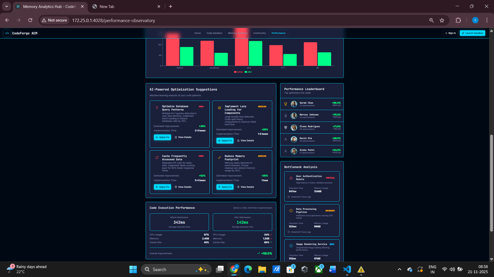
ACMMEM is an intelligent software engineering platform designed to help developers understand, analyze, optimize and visualize application performance. The system combines memory analytics, performance observability, bottleneck detection, optimization recommendations and community-driven learning into a unified developer ecosystem.
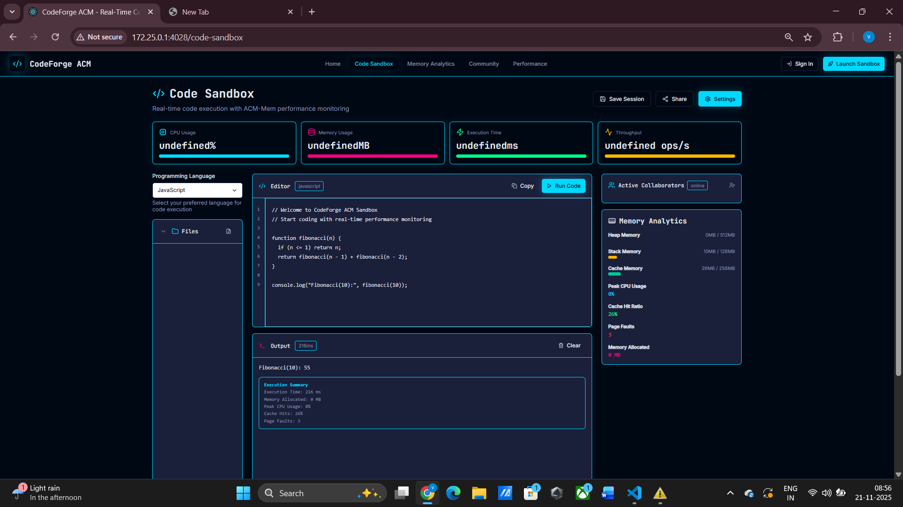
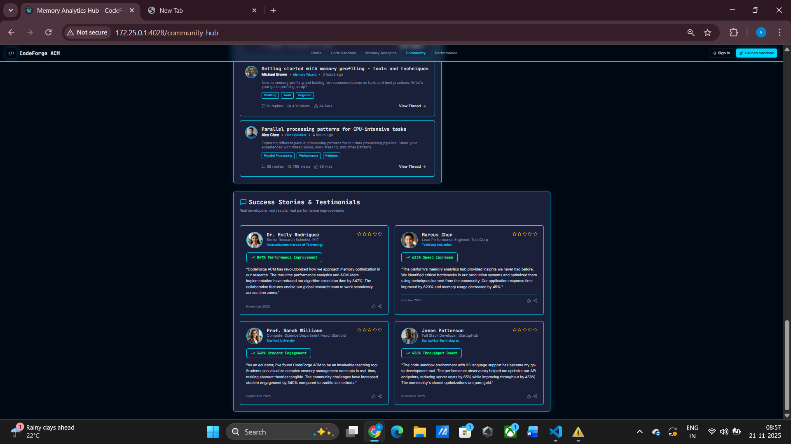
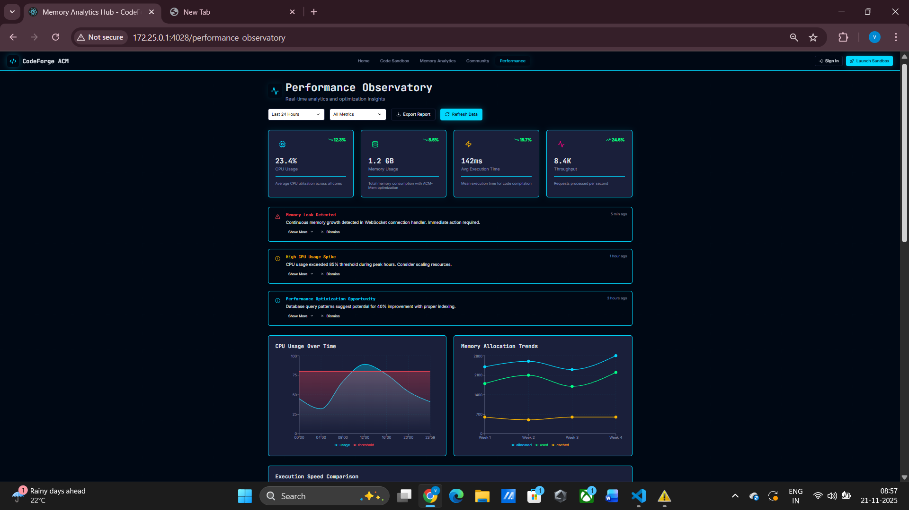
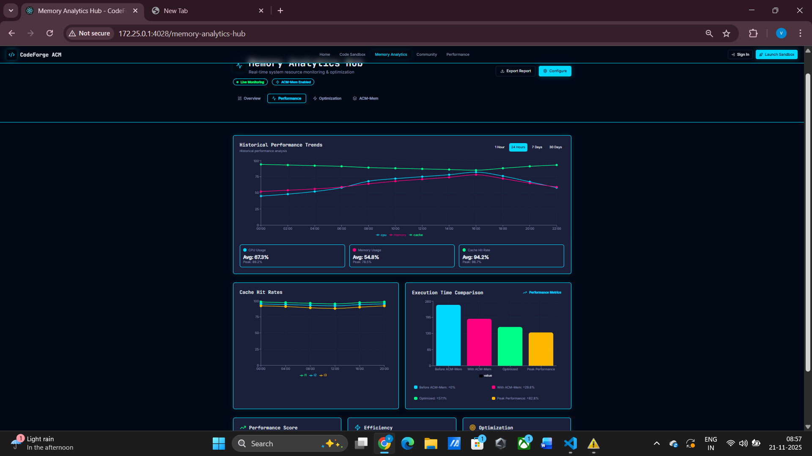
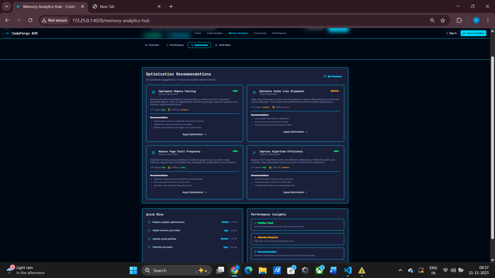
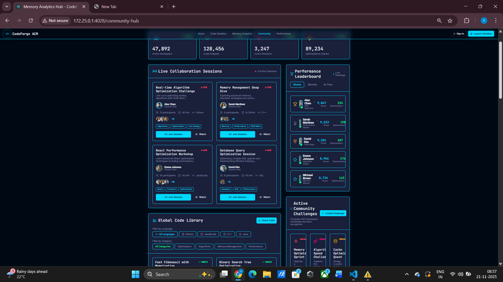
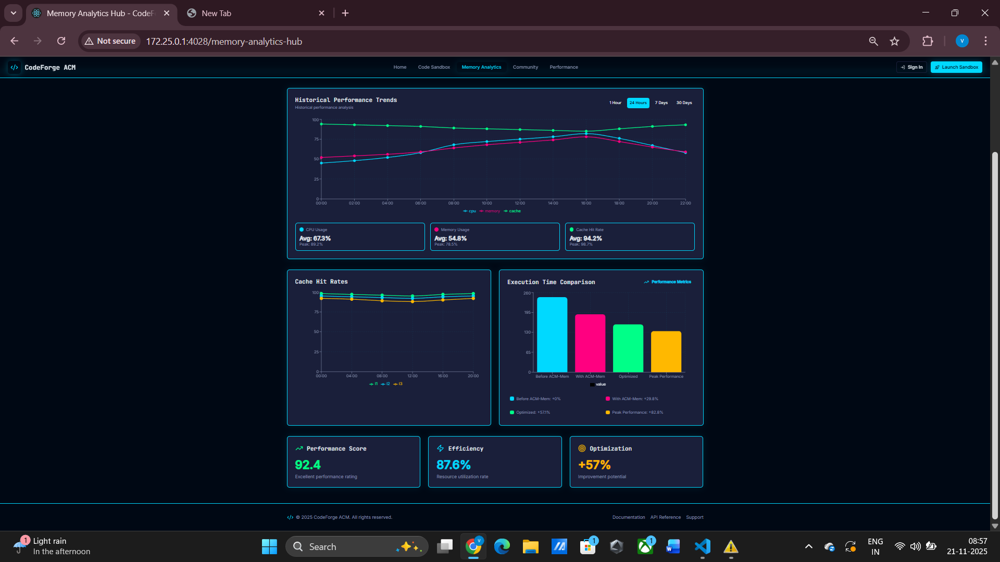
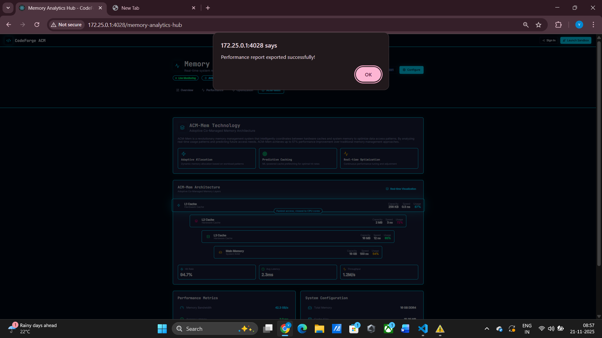
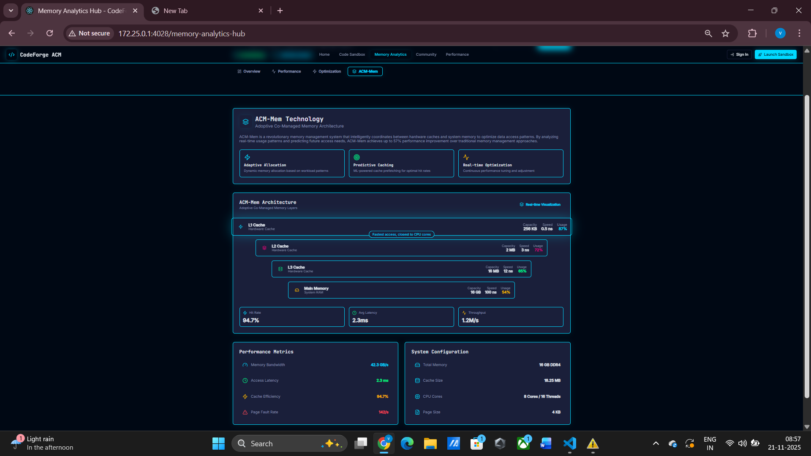
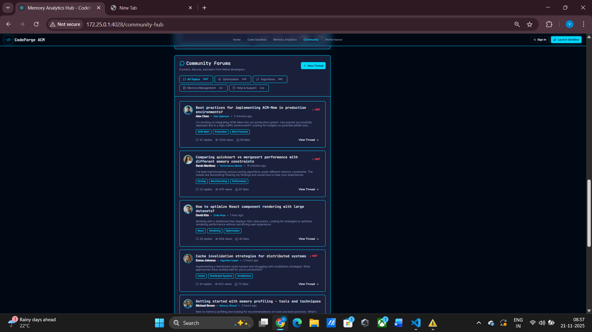
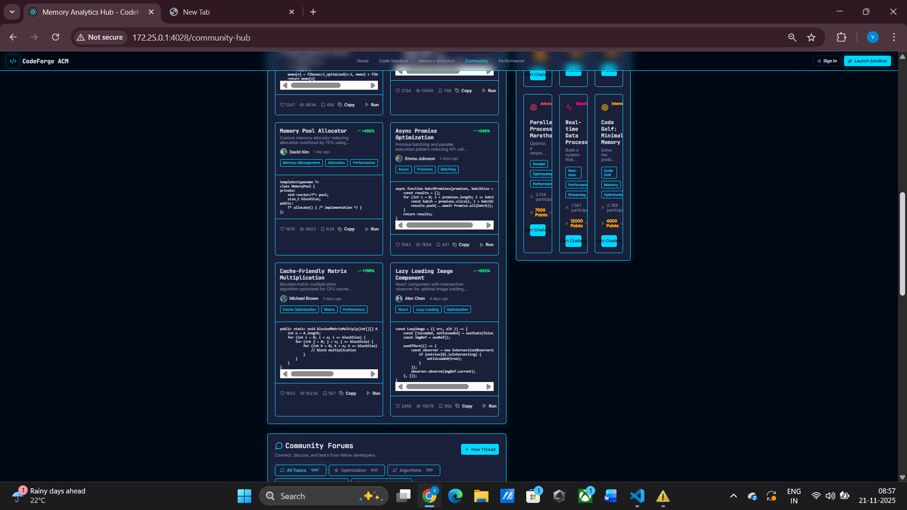
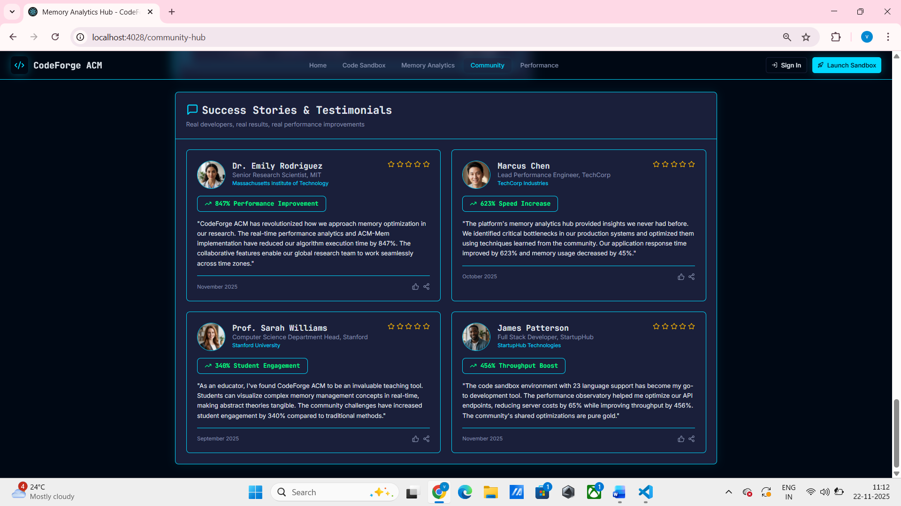
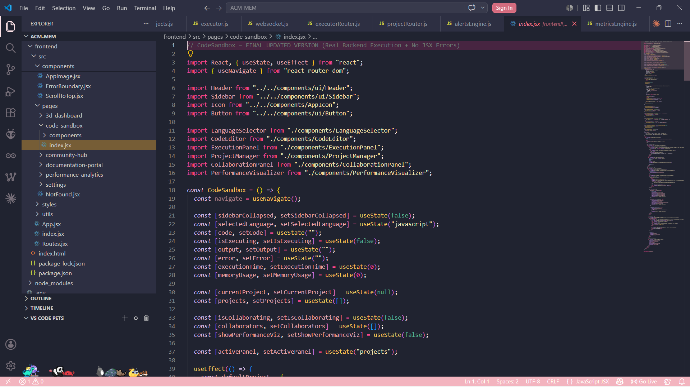